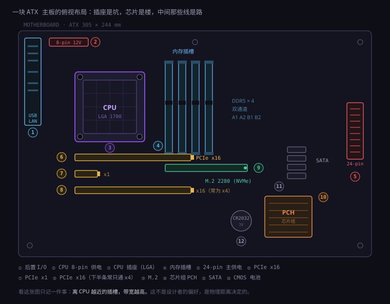
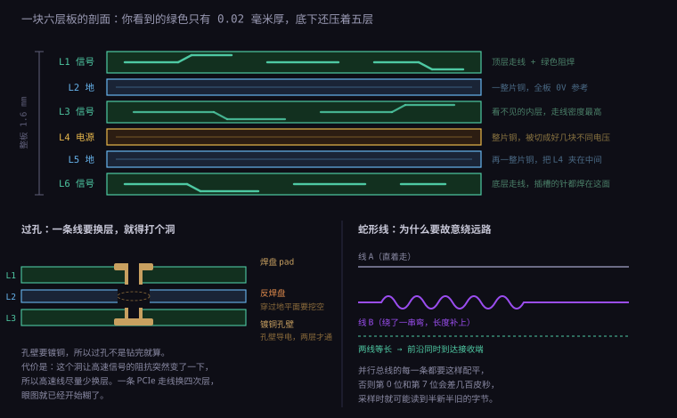
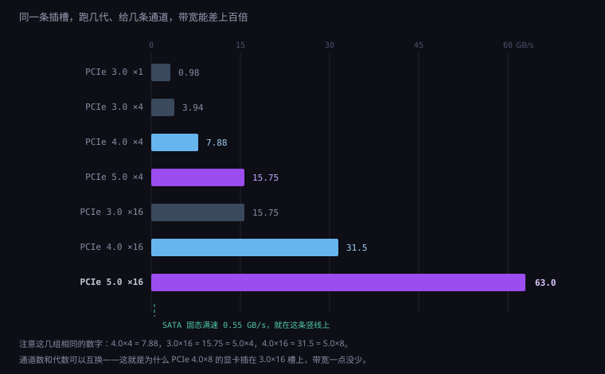
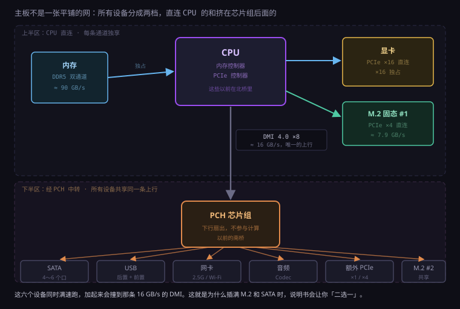

约 1.4 万字 · 4 张图 · 读完你能看懂任何一块主板的布局， 知道每个插槽为什么在那个位置、为什么不换个地方
先把最容易误解的一点说清：主板不计算任何东西。
它上面没有一颗芯片在帮你做加减法（除了几个负责管理的小控制器）。 你把主板上所有的芯片、电容、插槽全部拆掉，剩下的那块板子，作用只有一个—— 让别的东西能互相说话。
这个定位决定了它的全部设计。既然它只负责「让 A 和 B 连起来」，那么它的每一个决策， 本质上都是一个通信问题：谁跟谁要说话，说得多快，离得多远，中间会不会互相干扰。
这就是为什么主板布局看起来「有规律」却说不清规律是什么。那些规律不是审美，是电气约束：
你会发现，前两条是电学原因，后三条是机械原因。 一块主板的样子，是「电气约束」和「机箱里东西摆在哪」两件事妥协的结果。 懂了这一点，你再看任何一块主板，都能猜出它为什么长这样。

服务器机箱里常有一块「背板」（backplane），长得也像一块大板子，上面全是插槽。 但它跟主板不是一回事：背板只做物理连接，把所有硬盘的接口汇总成一根线， 它不参与任何协议转换。主板则相反，它上面有芯片组、有供电转换、有时钟分发， 它是一个「有源」的中枢，不是一根粗电缆。
记住这个区别，因为后面讲网络交换机时会出现一模一样的结构： 交换机是「有源的中枢」，集线器是「一根共享的电缆」。两者长得像，性质完全不同。
把主板上所有元件都拆掉，你手里剩下一块绿色的板子。它叫 PCB， 全称 Printed Circuit Board，印刷电路板。
「印刷」这个词不是比喻。最早的做法真的是印上去的：把铜箔压在绝缘板上， 用抗蚀刻的墨把要保留的线路「印」出来，然后整块板丢进腐蚀液， 没被墨盖住的铜被腐蚀掉，剩下的就是线路。 所以电路不是刻出来的，是「印出来、再蚀掉多余部分」。
现在工艺精细多了，但原理没变。一块主板从内到外是这几层东西：
| 层 | 材料 | 作用 |
|---|---|---|
| 基材（芯板） | FR-4 玻纤布 + 环氧树脂 | 绝缘、承力。介电常数约 4.2，这个数字后面讲信号速度要用 |
| 铜箔 | 压合的纯铜，常见 1 oz | 1 oz 指「一平方英尺一盎司」，折成厚度是 35 微米 |
| 阻焊层 | 感光树脂，就是那层绿 | 盖住不该上锡的地方，防止焊锡乱跑、防止氧化 |
| 丝印层 | 白色油墨 | 那些「J1」「CPU_FAN」的小字，给人看的，不导电 |
| 表面处理 | 沉金（ENIG）或喷锡 | 保护裸露的焊盘不被氧化，同时保证可焊性 |
一块主板通常有 4 到 8 层，高端板能到 12 层。这里的「层」指的就是铜层， 不是板子的块数——它们是压在一起的一整块，你从侧面看只有 1.6 毫米厚。
为什么要这么多层？因为线太多了，一层放不下。
你可以把一层想象成一张纸。你在一张纸上画满线，还想再加线，就只能画到第二张纸上， 然后把两张纸叠起来，在需要连通的地方打个洞穿过去。 多层板就是这个思路：不是一个平面上的布线，而是一个立体的布线网。
为什么不做成一层、把板子做大一点？因为线长了信号就慢，而且板子大了装不进机箱。 更重要的：高速信号需要紧贴着「参考面」走——这一点在下一节讲层叠时会说清， 它是多层板存在的真正理由，不只是「放不下」。
能，但有下限。现在主板的普通信号线宽大约 0.1 毫米（4 mil）， 有些高密度板能做到 0.075 毫米。
限制来自三方面：
所以你在主板上能看到明显的宽度差异：细的线是信号，粗的线是电。 看到一条明显宽的铜带，那一定是供电或者地。
这是本节最需要看懂的一张图。你手上那块主板，剖面大概是这样：

从上往下六层，分别是：
| 层 | 角色 | 它在这一层干什么 |
|---|---|---|
| L1 | 顶层信号 | 元件都焊在这一面，走线也在这一面。你看到的那些细线就是它 |
| L2 | 地平面 | 整片铜，全部接 0V。它不是一个「层」，是一整块「参考底板」 |
| L3 | 内层信号 | 走线密度最高的地方，因为它两面都被平面夹着，最「安静」 |
| L4 | 电源平面 | 整片铜，但被切成好几块，分别给 CPU、内存、芯片组供不同的电压 |
| L5 | 地平面 | 再一整片铜，作用是「把 L4 夹在中间」 |
| L6 | 底层信号 | 插槽的针脚都焊在这一面，所以这层的走线要绕开所有焊盘 |
这一层是整块板子最重要、也最反直觉的部分。它不是「一根地线」，是一整片连续的铜， 面积几乎等于整块板子。
为什么需要一整片？因为电流永远要走「回路」。你从 CPU 送一个信号到内存， 电流从这条线过去，必须从「另一条路」回来。如果回来的路很远、很绕， 这个回路就会围出一个大圈，而这个圈就是一根天线—— 它会把信号辐射出去（干扰别人），也会把外面的干扰接收进来。
地平面做的事情就是：让回路尽可能短、尽可能贴着去路。 信号线在 L1 上走，它的回路就在正下方的 L2 里走，两条路几乎重合， 围出的面积接近零，天线效应就小到可以忽略。
主板上有好几种电压：CPU 核心要 1.0~1.3V，内存要 1.1V（DDR5）或 1.2V（DDR4）， 芯片组要 1.0V 左右，还有 3.3V、5V、12V 给各种外设。
一块铜皮只能是一个电压（否则就短路了）。所以 L4 这一层被刻成了好几块互不相连的「岛」， 每一块给一种电压供电。你看到的「一块铜」，其实是好几块拼图。
这就带来一个隐患：如果一条信号线从 A 岛上方走到 B 岛上方， 它的参考面在中途换了，回路的路径就断了，信号会「撞墙」。 所以规则是：高速线不能跨岛。要跨，就在跨的地方放几个电容，给高频回路搭个便桥。
整板标准厚度 1.6 毫米。六层铜、五层介质，加上表面的阻焊，平均每层介质不到 0.3 毫米。 铜层本身只有 35 微米——比一张纸还薄。
你手上那块板子，90% 的厚度是绝缘的环氧树脂和玻纤布，导电的铜只占很小一部分。 但它决定了全部功能。
在主板边缘（通常靠近芯片组），有一颗小小的银色金属方块，两脚或四脚焊在板上。 它不是电容，是石英晶体振荡器，简称晶振。
这颗东西在做一件全板最基础的事：提供一个绝对稳定的节拍。
原理叫压电效应：某些晶体（石英）在受到电压时会机械变形，变形又会产生电压， 两者形成一个极其稳定的共振。稳定到什么程度？普通晶振的频率误差是百万分之几十， 也就是一天下来差不到一秒。
为什么需要它？因为计算机里所有「同步」的事情，都必须有一个共同的参照。 如果 CPU 和内存各自按自己的节奏走，数据什么时候有效就说不清了。
主板上常见的晶振是 25 MHz。这个频率本身没什么神奇， 它只是「原料」。芯片组里有一个时钟发生器，把 25 MHz 加工成各种频率分发出去：
| 用给谁 | 频率 | 说明 |
|---|---|---|
| CPU 基准（BCLK） | 100 MHz | CPU 的实际频率 = 100 MHz × 倍频 |
| PCIe | 100 MHz | 所有 PCIe 设备的参考时钟，全板共用 |
| SATA | 100 MHz | 再倍频到 1.5/3/6 Gbps |
| USB | 24 MHz | 再倍频出 480 Mbps（USB 2.0）或 5/10 Gbps |
| 音频 Codec | 24.576 MHz | 正好是 48 kHz × 512，为了音频采样整除 |
既然有六层，那必然有「这条线要从第 1 层走到第 6 层」的需求。 怎么走？打个洞。
这个洞叫过孔（via）。做法是：钻孔，然后在孔壁上镀一层铜， 于是这个洞就变成了一根「竖着的导线」，把上下两层连起来。
你可能会想：钻个洞不就完了？没有这么简单。这里有三个真实的工程细节：
钻完的孔是绝缘的（因为基材是树脂）。要让它导电，得先做「沉铜」—— 用化学反应在孔壁上沉积一层薄铜，再电镀加厚。所以过孔不是「钻」出来的，是「钻 + 镀」出来的。
这带来一个限制：孔径不能太小。常见机械钻孔最小 0.2 毫米， 再小就要用激光钻（HDI 板），成本高一个数量级。 而孔径和孔壁铜厚是一对矛盾：孔越小，镀铜越难均匀。
这是最容易忽略但最关键的一点。假设一根过孔从 L1 穿到 L3，它会经过 L2——而 L2 是一整片地。 如果不管它，这个孔就直接跟地短路了。
所以必须在 L2 上给这个孔挖出一个环形的空隙，叫反焊盘（anti-pad）。 图上那个虚线圆就是它。这一圈空隙保证了孔壁和地平面不接触。
但空隙一挖，地平面就不完整了。孔越多，地平面上的洞越多，参考面越破碎。 这就是为什么高速区域（CPU 和内存之间）要控制过孔密度—— 不是怕钻不下，是怕把地平面打成筛子。
这个最微妙。一根走线在平面上是「一条扁平的铜带」，有固定的宽度和固定的阻抗。 当它走进一个过孔，形状突然从「扁」变成「圆筒」，截面变了，阻抗就变了。
阻抗一变，信号就会反射——一部分能量弹回去，往前走的那部分就弱了、变形了。 频率越高，这个反射越明显。
普通过孔是从 L1 一直穿到 L6，即使它只需要连 L1 和 L3。 多穿的那几层要挖反焊盘、要占面积，很浪费。
高端板会用盲孔（只从外层通到内层，外面看不见）和埋孔 （只在内层之间，外面完全看不见）。这两种工艺要多几次压合，成本高， 但能让布线密度大幅提升。手机主板几乎全是这种工艺，因为空间实在太小。
一句话总结过孔：它是「立体布线」必须付的代价，每一处都在用信号质量换布线自由度。
现在看板子上那些线本身。这一节讲三个概念，它们解释了你在主板上看到的所有「奇怪走线」。
在低频电路里，一根线就是一根线，只看电阻。 但在高频里，一根线加上它下方的地平面，构成了一个传输线—— 它有固定的「特性阻抗」，通常是 50 欧、85 欧、90 欧或 100 欧。
阻抗由三样东西决定：线宽、线到地平面的距离、基材的介电常数。 这三样一旦定了，阻抗就定了。
所以设计师不是「随便画一条线」，而是「按目标阻抗反推出线宽」。 DDR 内存的单端线要 40 欧左右，PCIe 的差分对要 85 欧，USB 要 90 欧，SATA 和网口要 100 欧。 同一条板子上，不同区域的线宽不一样，就是因为目标阻抗不一样。
你在主板上会看到大量「两根线并排、间距固定、一起拐弯」的走线。 这不是装饰，这是差分信号。
原理很聪明：不传「一根线相对地的电压」，而传「两根线之间的电压差」。 发送端把信号拆成一对反相的信号（一根升，另一根同时降）， 接收端只看两者的差。
好处是：外界的干扰会同时加在两根线上，一减就抵消了。 这叫共模抑制。所以差分信号抗干扰能力极强，可以用更小的电压摆幅、跑更高的速度。
| 接口 | 差分阻抗 | 为什么是这个值 |
|---|---|---|
| PCIe | 85 Ω | 高速串行，追求低损耗 |
| USB 2.0 / 3.x | 90 Ω | 兼顾成本与兼容，历史沿用 |
| SATA | 100 Ω | 早期存储接口的约定 |
| 以太网 | 100 Ω | 双绞线本身就是 100 欧，板端要匹配 |
| DDR 时钟 | 80 Ω 左右 | 与单端 40 欧配套（两条单端等于一对差分） |
差分对有一条铁律：两根线必须等长。 因为信号在板上的速度大约是每纳秒 15 厘米，如果一根比另一根长 1.5 厘米， 就会差 100 皮秒。这个时间差会让「差」算错——本来应该抵消的干扰，变成了失真。
所以你会看到设计师为了让两根线等长，故意把短的那根绕成蛇形。 图 2 右下角画的就是这个。看起来像「绕远路」，其实是「补长度」。
不只是差分对内部要等长。一组并行的总线，比如 DDR 的 8 根数据线， 彼此之间也要等长——因为它们是一起采样的一位字节， 如果第 0 位比第 7 位晚到 200 皮秒，采样时可能读到「半新半旧」的组合。
这类规则在主板上的表现就是：CPU 到内存插槽之间那一片区域，线画得密密麻麻、全是蛇形。 那不是乱，那是在做「长度匹配」。
给一个可以记住的数：PCB 上信号速度约为光速的一半，也就是每纳秒 15 厘米。
换算一下：每毫米约 6.7 皮秒。 所以一段 10 厘米的走线，信号要走 0.67 纳秒。 而 DDR5-5600 的一个时钟周期是 0.36 纳秒——信号从 CPU 走到内存再回来，比一个时钟周期还长。
这就是为什么内存必须离 CPU 那么近。不是为了好看，是因为再远一点，时序就对不上了。
现在进入具体接口。第一个就是机箱里最金贵的那个坑：CPU 插槽。
你翻开插槽的压杆，会看到一片密密麻麻的金属小针（Intel 的 LGA1700 是 1700 个）， 密到肉眼看不清单个。这 1700 个触点，每一个都有明确的分工，没有一个是为了凑数。
| 缩写 | 全称 | 针长在哪，谁更容易坏 |
|---|---|---|
| PGA | Pin Grid Array | 针长在 CPU 上。AMD 的老 AM4、早期的 Intel 都是这种。装的时候容易把针压弯 |
| LGA | Land Grid Array | 针长在插槽上，CPU 背面只有平的触点。Intel 从 2004 年起全用这个，AMD 的 AM5 也改了 |
| BGA | Ball Grid Array | 直接焊死在主板上，没有插槽。笔记本、手机的 CPU 都是这种，焊上去就不能换 |
LGA 和 PGA 的取舍很直白：针在谁身上，谁就承担「被弄弯」的风险。 PGA 时代，用户弄弯 CPU 针脚是常见事故，一根针弯了就可能点不亮。 LGA 把风险转移到主板插槽上——插槽坏了换主板更贵，但至少 CPU 不容易报废， 而且触点能做得很密（因为没有针的高度限制）。
没人会把 1700 个针的用途全部背下来，但大类是可以数清的：
| 用途 | 大约数量 | 说明 |
|---|---|---|
| 核心供电（VCC） | 500 根以上 | 给 CPU 核心供电。核心电压约 1.1V，电流能到 200A |
| 地（GND） | 400 根以上 | 每个供电针旁边都要有地针，否则电流回不去 |
| 内存通道 | 200 根以上 | DDR5 双通道，数据 + 地址 + 时钟 + 控制 |
| PCIe 通道 | 80 根以上 | 16 条显卡通道 + 4 条 M.2 通道，每条 4 根线 |
| DMI（通芯片组） | 约 20 根 | CPU 和 PCH 之间唯一的通道 |
| 显示输出 | 几十根 | 核显直接输出到主板上的 HDMI/DP 口 |
| 时钟、复位、管理 | 几十根 | BCLK、电源管理、温度报告、调试口 |
这是最值得算一遍的地方。
一颗高端桌面 CPU，满载功耗 250 瓦，核心电压假设 1.2 伏。 电流 = 功率 ÷ 电压 = 250 ÷ 1.2 ≈ 208 安培。
208 安培是什么概念？家用空调的电流大约是 5 安。也就是说， 这颗 CPU 吃的电流相当于四十台空调同时运行——只不过电压只有 1.2 伏。
一根插槽针脚能安全通过的电流大约 0.5 安。所以 208 ÷ 0.5 ≈ 416 根， 再加余量、加并联分流的不均匀，500 根是合理的。
放大看 LGA 的触点阵列，你会发现它不是整齐的正方形网格，而是错开的。
原因有两个：一是同样的面积能塞下更多触点（交错排列比方格密约 15%）； 二是相邻针脚之间要留出爬电距离——1.2V 和地之间如果太近， 潮湿环境下可能漏电。交错排列让相邻的高压/低压针不直接相对。
内存插槽是长条形，里面有一排金手指的触点，还有一个明显的缺口。 这个缺口的位置不是随便定的，它是防错设计里最经典的一种。
内存条插反了会怎样？如果插槽没有缺口，理论上能反着插进去， 结果就是电源针接到数据针上，通电瞬间烧毁。
所以标准规定：不同代的内存，缺口位置不同。 DDR3 的缺口偏左，DDR4 往中间挪了一点，DDR5 又挪了一点。 这样你拿一条 DDR5 去插 DDR4 的槽，物理上就插不进去。
| 类型 | 针数 | 缺口位置 |
|---|---|---|
| DDR3 | 240 | 偏左，距左端约 1/4 处 |
| DDR4 | 288 | 中间偏左，与 DDR3 差约 2 毫米 |
| DDR5 | 288 | 与 DDR4 针数相同但缺口位置不同，故意不兼容 |
注意最后一行：DDR4 和 DDR5 都是 288 针，缺口却不一样。 这是刻意的——如果只是针数不同，厂商完全可以做成兼容； 但电气特性差太远（DDR5 是 1.1V，内部还分了两个子通道），强行兼容只会两边都做不好。
这是主板说明书里最常见、也最容易被忽略的一句话： 「双通道请优先插 A2 和 B2」（也就是离 CPU 第二近、第四近的那两条）。
为什么不插最近的两条？因为布线拓扑。
四条插槽在电气上是挂在同一组通道上的，但走线方式有两种：
现代主板绝大多数用菊花链。所以「A2 + B2」正好是每条通道的末端， 信号走到那里就结束了，不会再有反射回来。 插在 A1 + B1 上，信号要多走一段才能到末端，那一段就成了「多余的分支」，会拖累高频。
这是 DDR5 相对 DDR4 最大的结构变化，很多资料一句带过，但它解释了一个常见困惑： 为什么单条 DDR5 的带宽，比单条 DDR4 高那么多？
DDR4 时代，一条内存就是一个 64 位宽的通道。要双通道，必须插两条。 DDR5 把每条内存拆成了两个独立的 32 位子通道， 各自有自己的地址和命令总线。
结果是：一条 DDR5 就已经是「双通道」了（只是每个通道 32 位）。 插两条，就变成四个 32 位子通道。
算一下带宽：DDR5-5600 意味着每秒 5600 兆次传输，每次传 8 字节（64 位）—— 但一条内存实际是 2×32 位，所以是 5600 × 8 = 44.8 GB/s。 两条就是 89.6 GB/s，接近图 4 里写的 90 GB/s。
主板上那些长短不一的插槽，长的能插显卡，短的能插网卡、声卡、采集卡。 它们的区别只有一个：给了几条通道（lane）。
PCIe 是全双工串行总线。一条 lane 包含：
所以「×16 的显卡插槽」意味着 16 条 lane，也就是 64 根信号线， 再加上一堆地线和辅助信号。这就是为什么它那么长、那么宽， 也是为什么它必须紧贴 CPU——64 根线要一起走，还得长度匹配，走远了根本画不下。
| 规格 | 物理长度 | 常见用途 |
|---|---|---|
| ×1 | 25 mm | 网卡、声卡、USB 扩展卡 |
| ×4 | 39 mm | 采集卡、万兆网卡、M.2 转接卡 |
| ×8 | 56 mm | RAID 卡、部分网卡 |
| ×16 | 89 mm | 显卡 |
重要的一点：物理长度不等于电气通道数。 很多主板上第二条「×16 长槽」其实只焊了 4 条 lane 的线（图上标的「常为 ×4」就是这个意思）。 它长得像 ×16，插得进显卡，但跑起来只有 ×4 的带宽。

这张图要传达的核心是一句话：带宽 = 每 lane 速率 × lane 数，两者可以互换。
每升一代，单 lane 速率翻倍：3.0 是 8 GT/s，4.0 是 16，5.0 是 32，6.0 是 64。 所以「4.0 ×8」和「3.0 ×16」带宽完全一样（都是 15.75 GB/s 左右）。
这个事实有很实用的推论：显卡插在低一代的插槽上，只要通道数够，性能损失很小。 实测数据：RTX 4090 在 PCIe 4.0 ×8 下，游戏帧率只比 ×16 低 2~4%。 因为游戏的数据量还没把 ×8 喂满。
但换成 AI 推理、大模型加载就完全不同了——那些场景是真的在搬几百 MB 的权重， 带宽直接决定加载时间。同一张卡，×4 和 ×16 能差三倍。
这是另一个常被搞混的地方。PCIe 3.0 标称 8 GT/s（每秒 80 亿次传输）， 但实际每 lane 只有约 985 MB/s，差不多是八分之一。中间差在两处：
算一遍 PCIe 3.0：8 × 10⁹ ÷ 8 × (128/130) ≈ 985 MB/s。对上了。
固态硬盘在主板上只有两种接法：M.2 插槽，或者 SATA 线。它们看起来只是「插法不同」， 实际上是两套完全不同的协议。
这是最常被搞混的一点。M.2 只是「插槽的形状」，它不规定用什么协议。
同一个 M.2 插槽里，可能跑 SATA 协议，也可能跑 PCIe 协议。 决定权在硬盘本身和主板的支持。判断依据是缺口（key）的位置：
| Key | 缺口位置 | 能跑什么 |
|---|---|---|
| B key | 偏左 | SATA 或 PCIe ×2 |
| M key | 偏右 | PCIe ×4（NVMe 固态基本都是这个） |
| B+M key | 两个缺口 | 兼容两种插槽，通常是 SATA 固态 |
所以「M.2 固态」这个说法本身是不精确的。准确说法是「M.2 接口的 NVMe 固态」或 「M.2 接口的 SATA 固态」。前者能跑 7000 MB/s，后者还是 550 MB/s—— 外形一样，速度差十几倍。
指的是尺寸：宽 22 毫米，长 80 毫米。 还有 2242（42mm）、2230（30mm）、22110（110mm）。 笔记本常用 2230 和 2242（空间小），台式机一般 2280。
买之前要查主板支持哪种长度。虽然大多数插槽有多个螺柱孔位能兼容， 但有些短槽装不下 22110。
这是「协议层」的差别，值得说清：
| 对比项 | AHCI（SATA 时代） | NVMe（PCIe 时代） |
|---|---|---|
| 队列深度 | 1 个队列，32 条命令 | 最多 64K 个队列，每队列 64K 条命令 |
| 延迟 | 每次命令约 6 微秒 | 约 2.8 微秒，且可并行 |
| 设计年代 | 2004 年，为机械硬盘设计 | 2011 年，为闪存设计 |
| 带宽上限 | 约 600 MB/s（SATA 3.0 的极限） | 取决于 PCIe 通道数，理论无上限 |
关键在「队列深度」。机械硬盘时代，一次只能处理一个请求（因为磁头只有一个）， 所以 AHCI 设计成单队列就够了。但闪存可以并行访问很多个存储单元， 单队列等于让一万个工人排队用一个工具。
这就是为什么 SATA 固态再贵也突破不了 600 MB/s——不是颗粒不行， 是那根 SATA 线（6 Gb/s）和那套 AHCI 协议把它锁死了。
因为它的读写速度太快，功耗密度高，而且它没有机械结构帮忙散热—— 整个芯片只有一片薄薄的 PCB 和一层贴纸。
一块 PCIe 4.0 固态满速读写时功耗能到 8 瓦，集中在指甲盖大小的主控芯片上。 温度到 70~80°C 就会触发降速保护（throttling），速度掉到三分之一。 所以中高端主板会给 M.2 槽配一块金属散热片，不是为了好看。
现在看主板上最不起眼、但成本最高的一片区域：CPU 插槽左边和上方， 围着插槽那一圈方方正正的小方块和小圆柱。
这片东西叫 VRM（Voltage Regulator Module，电压调节模块）。 它做一件极其简单又极其难的事：把电源送来的 12 伏，变成 CPU 要的 1.1 伏左右。
因为输不起。12 伏送 200 安，线损是 I²R，同样功率下电压越低电流越大，损耗越大。 电源在机箱另一头，中间要经过几十厘米的线—— 送 12 伏过去，在主板最后几厘米再降压，是效率最高的做法。
这也解释了为什么 CPU 附近一定要有一个 8-pin（或双 8-pin）的供电口： 它就是那根「送 12 伏」的粗管子。
| 元件 | 长相 | 作用 |
|---|---|---|
| PWM 控制器 | 一颗小芯片 | 大脑。它监测输出电压，决定每个开关什么时候开、什么时候关 |
| MOSFET（DrMOS） | 黑色小方块，常带散热片 | 开关。它每秒开关几十万次，把 12V 切成一段段 |
| 电感（Choke） | 灰色方块，上面有字 | 储能 + 平滑。把方波「捋」成平稳的电流 |
| 电容 | 小圆柱（固态电容） | 缓冲。CPU 突然要大电流时，先由它顶上 |
原理叫「 buck 降压」，说白了就是：用开关把 12V 切成很多段，再用 LC 滤波取平均值。 想要 1.1V，就让开关「开」的时间占 9% 左右（1.1 ÷ 12 ≈ 0.09）。 这个比例叫占空比，PWM 控制器每时每刻都在微调它。
你在主板广告上会看到「16+2+1 相供电」。这个数字指的是并联的降压通道有几组。
一组通道（一相）能提供的电流有限，大约 30~90 安（看 MOSFET 型号）。 CPU 要 200 安，就必须多组并联，轮流工作。 所谓「16 相」，就是 16 组电感 + MOSFET 并联，每一相只承担 1/16 的电流。
后面那两个数字是给别的部分供电的：+2 给核显，+1 给内存控制器或输入输出。
老主板上有那种银色的圆柱形电解电容，里面是电解液。 电解液会干、会鼓包、会漏液——2000 年代初的「电容爆浆」事件就是这么来的， 一批劣质电容让整批主板在两年内集体报废。
现在的固态电容用导电高分子材料，寿命长五倍以上，耐温更高，内阻更低。 你在主板上看到的小圆柱，绝大多数已经是固态的了。
主板右下角（有时在中间偏下）有一块方形芯片，上面盖着一片铝散热片， 通常还印着品牌 logo。这是芯片组，Intel 叫 PCH，AMD 叫 FCH 或直接叫芯片组。
它做的事情，用一句话说：把所有「慢设备」汇总成一条通道，交给 CPU。

这张图值得看两分钟，因为它是理解「为什么插满设备会互相拖累」的唯一钥匙。
这个设计不是一开始就有的。早年主板上有两颗芯片：
分两颗的原因是：当年 CPU 的引脚不够，也没必要把慢速接口都集成进去。 南桥相当于一个「协议转换 + 汇总」的中转站。
后来发生了一件事：CPU 把北桥的功能吃掉了。 AMD 从 Athlon 64（2003 年）开始把内存控制器搬进 CPU； Intel 从 Nehalem（2008 年）跟进。再后来 PCIe 控制器也搬进去了。
北桥没了，只剩南桥。于是「南桥」这个名字也不叫了，改叫 PCH（Platform Controller Hub）。 所以你今天看到的那一颗，本质上是「当年的南桥」。
图上中间那条竖线，Intel 叫 DMI（Direct Media Interface），AMD 用 4 条 PCIe 通道。
DMI 4.0 是 ×8，带宽约 16 GB/s。注意：这是整个下半区所有设备共享的 16 GB/s。
算一笔账：一个 2.5G 网口满速 0.3 GB/s，一个 USB 3.2 Gen2 满速 1.25 GB/s， 六个 SATA 固态同时读 3.3 GB/s，再插一个 PCIe ×4 的采集卡 7.9 GB/s…… 加起来早就超过 16 GB/s 了。
平时不会出问题，因为这些设备很少同时满速。但只要有一个场景让它们撞到一起 （比如一边拷贝大量文件、一边用采集卡录屏），你就会感觉到卡。 这就是「插满设备会变慢」的物理原因。
| Intel | AMD | 定位与关键差异 |
|---|---|---|
| H610 | A620 | 入门。不能超频 CPU，PCIe 和 USB 通道少，内存频率有上限 |
| B760 | B650 | 主流。不能超 CPU 但能超内存，通道数够用。绝大多数人的选择 |
| Z790 | X670 | 高端。能超 CPU、能拆 PCIe 通道（×16 拆成 ×8+×8）、USB 和 SATA 最多 |
| W790 | TRX50 | 工作站。配至强或线程撕裂者，内存通道数翻倍 |
Intel 的数字第一位是「代数」：600 系配 12 代，700 系配 13/14 代。 注意接口虽然都叫 LGA1700，但 600 系主板可能要刷 BIOS 才能认新 CPU—— 这是升级时最常见的坑。
主板左侧那一竖条接口，是你每天都要插东西的地方。它看起来杂乱，其实每个口都有明确的归属。
这是整个计算机领域最让人抓狂的命名。同一个 5 Gbps 的速度，前后有过三个名字：
| 你看到的名字 | 实际速度 | 备注 |
|---|---|---|
| USB 2.0 | 480 Mbps | 2000 年的标准，现在还在用（键盘鼠标） |
| USB 3.0 = 3.1 Gen1 = 3.2 Gen1 | 5 Gbps | 三个名字，同一个东西。厂商最爱玩这个 |
| USB 3.1 Gen2 = 3.2 Gen2 | 10 Gbps | 又改了一次名 |
| USB 3.2 Gen2×2 | 20 Gbps | 用两对 lane 并行，只有 Type-C 能做 |
| USB4 | 20 / 40 Gbps | 基于雷电 3 协议，只有 Type-C |
现在的规范要求厂商直接标速度（比如「USB 5Gbps」），不许再写 3.2 Gen1。 如果你看到包装上写「USB 3.2」，那它可能只是 5 Gbps——USB 3.2 是一个系列名，不是一个速度。
主板上的 HDMI 和 DisplayPort，接的是CPU 里的核显，不是你的独立显卡。
所以装完独显之后，显示器一定要插在显卡的接口上， 插主板上会没画面（或者只有很低的性能）。 这是新手装机最常见的「装完不亮」原因之一。
| 接口 | 带宽 | 能带动什么 |
|---|---|---|
| HDMI 2.0 | 18 Gbps | 4K 60Hz，或 2K 144Hz |
| HDMI 2.1 | 48 Gbps | 4K 120Hz、8K 60Hz |
| DisplayPort 1.4 | 32.4 Gbps | 4K 120Hz，支持菊花链多屏 |
| DisplayPort 2.1 | 80 Gbps | 8K 60Hz 无损，多屏高刷 |
网口：RJ45，常见 1G 或 2.5G。旁边两颗小灯，一个亮表示「连上了」，一个闪表示「在传数据」。 无线网卡的天线接口是两个金色小圆头（SMA），机箱后面那两根天线就拧在这。
音频：三个 3.5mm 孔，颜色是国际惯例—— 绿色是输出（耳机/音箱），蓝色是线路输入，粉色是麦克风。 六个孔的板子会多出中置/低音、后环绕等，用于 5.1/7.1。
光纤 S/PDIF：一个小方孔，里面发红光，传数字音频。 现在少见了，因为 HDMI 已经能传音频。
| 东西 | 作用，以及坏了会怎样 |
|---|---|
| BIOS 芯片 | 一颗 8 脚小芯片，存着 UEFI 固件（16~32 MB）。它决定主板能不能点亮 |
| CMOS 电池（CR2032） | 3V 纽扣电池，维持时钟和 BIOS 设置。没电的症状：每次开机时间回到 2000 年、要按 F1 才能启动 |
| 风扇接口（CPU_FAN / SYS_FAN） | 4 根针：地、12V、测速、PWM 调速。插错口会导致风扇全速转或主板报「CPU Fan Error」 |
| 前置面板针脚（F_PANEL） | 开机键、重启键、电源灯、硬盘灯。装机的最后一步，也是最多人卡住的一步 |
| Debug 灯 / 数码管 | 开机自检卡住时，灯亮在哪一项就说明卡在哪（CPU / DRAM / VGA / BOOT） |
| 清除 CMOS 跳线 | 两根针，短接一下就恢复出厂设置。超频失败点不亮时的救命稻草 |
这一节把前面的知识落成实用的判断。
| 板型 | 尺寸（毫米） | 适合谁 |
|---|---|---|
| E-ATX | 305 × 330 | 工作站、多显卡。机箱要够大 |
| ATX | 305 × 244 | 标准台式机。插槽多、散热好、装机最容易 |
| Micro-ATX | 244 × 244 | 主流性价比。少两三条插槽，其他几乎一样 |
| Mini-ITX | 170 × 170 | 小机箱。只有一条 PCIe 槽、两条内存槽，贵且难装 |
注意：小主板不一定便宜。 因为要在同样面积里塞下同样的功能，布线密度要更高、层数要更多， 所以 ITX 主板往往比同芯片组的 ATX 还贵。
芯片组不影响性能（除了超频能力），它影响的是扩展性和功能上限。 挑的时候问自己三个问题：
| 要看什么 | 为什么 |
|---|---|
| VRM 有没有散热片 | 没有的话，高功耗 CPU 满载会降频 |
| 供电是几相、用什么 MOSFET | 比「几相」更重要的是「每相多少安」 |
| M.2 槽有没有散热片 | PCIe 4.0/5.0 固态不加散热会掉速 |
| 通道分配表（说明书最后） | 插了 M.2 之后哪个 SATA/PCIe 会失效 |
| BIOS 更新方式 | 有没有「无 CPU 刷 BIOS」按钮，决定能不能上新 CPU |
| 后置 USB 的具体规格 | 「6 个 USB」可能是 4 个 2.0 + 2 个 5Gbps |
1. 因为高速信号是电磁波，需要参考面才能形成稳定场型；没有参考面，阻抗失控，信号会反射失真，同时回路面积变大变成天线，辐射和抗扰都变差。
2. 因为板上有多种电压（1.1V、1.2V、3.3V、5V、12V），一块铜只能是一种电压，否则短路。
3. 不挖就会让孔壁和地平面直接短路。副作用是地平面被打出一个个洞，参考面变得不完整，孔越密影响越大。
4. 约 15 厘米每纳秒（光速的一半）。差 1.5 厘米约等于 100 皮秒。
5. 因为动态功耗与电压的平方成正比（P ∝ V²f）。升压会让功耗暴涨，只能降压，降压就导致电流暴涨，因此必须用大量针脚并联分流。
6. 因为现代主板用菊花链拓扑，A2/B2 是每条通道的末端。插在末端信号走到那里就结束，不会产生回波；插在中间会留下多余分支，拖累高频。
7. 一样大，都是约 15.75 GB/s。带宽 = 每 lane 速率 × lane 数，代数翻倍和通道数翻倍是等效的。
8. 因为 M.2 只是插槽形状，不规定协议。同一个槽可能跑 SATA 也可能跑 PCIe。看缺口位置：M key 一般是 PCIe ×4（NVMe），B+M key 通常是 SATA。
9. 因为芯片组的总通道数固定。第二个 M.2 的通道是从 SATA 控制器或 PCIe 通道里「借」的，借了就得还，所以对应的 SATA 口被禁用。
10. 主板上的 CMOS 纽扣电池没电了。时间错乱会让 HTTPS 证书的有效期校验失败，于是所有加密网站都打不开。